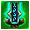
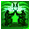
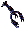

強化、弱化などのアイコン
- horrific beast ： HP回復+20, 武器ダメージ+25%
- lich form ： HP回復-5, マナ回復+13, FR-10%, CR+10%, PR+10%
 vampiric embrace ： ライフドレイン+20%, スタミナ回復+15, マナ回復+3, FR-25%
vampiric embrace ： ライフドレイン+20%, スタミナ回復+15, マナ回復+3, FR-25%- 毒耐性 ： vampiric embraceによる毒耐性の効果
- wraith form ： AR+15%, FR-5%, ER-5%, マナダウン（吸収）○%
- curse weapon ： ライフドレイン+50%, カウント○秒
-  enchant ： 追加魔法 ○%, カウント○秒
- honorable execution ： 敵に攻撃したとき、成功失敗に関わらず表示
- confidence ： 受け流し成功時のHPおよびスタミナ回復量, HP回復+○(4秒間), カウント15秒
- evasion ： 物理攻撃と呪文の受け流し確率が上昇。カウント7秒
-  counter attack ： カウント30秒
- lightning strike ： 命中+50%, 致命傷確率○%
- momentum strike ： 対象が倒された場合、近くの対象に対するダメージボーナス○%
- 名誉の戦い ： 名誉の戦いの相手を表示
- パーフェクション ： 名誉の戦いの相手を指定した時表示。ダメージボーナス○%
- マナ同調 ： マナ同調のオーブを使用した時表示。次回のマナチェックを無条件に通過
- ステータス回復活性 ： サージシールドを使用した時表示。回復の種類, カウント20秒
- ダメージ保護 ： 保護のルーンサッシュを使用した時表示。保護の種類, カウント10秒
- オレンジの花びら ： 毒耐性, カウント300秒
- トリンシックのバラ ： STR+5, カウント300秒
- 怒りのブドウ ： 魔法ダメージ+15%, 武器ダメージ+35%, カウント20秒
- veterinary ： veterinaryスキルで動物を回復する時表示
- Rotwormの血の病
- Hiryuのわしづかみ
- 怒り攻撃
- ファンダンサーファイア
- Rune Beetleの堕落
マナリーチおよびライフリーチのエフェクトが追加されました。
Abyssの溶岩にロブスター用の耐熱罠を仕掛け、罠にvoid lobsterがかかるようになりました。

魔法のフィッシュパイもまとめられるアイテムになりました。
ただ、生地などと同じように、標準品と高品質品はまとめることができません。